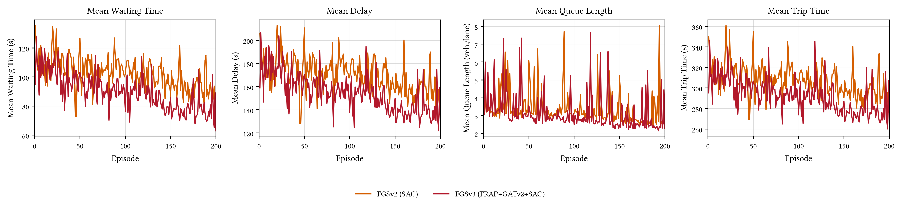
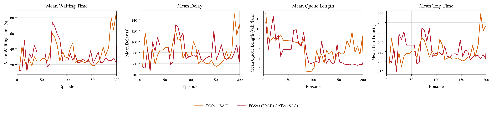

02 — The Problem
Congestion is a network problem
int. 1
int. 2
int. 3
{{ caption2 }}
{{ sceneButtonLabel2 }}

Ingolstadt21 — real spillback
03 — Background
How an intersection becomes an RL problem
Movements
Every lane × turn combination — 12 at a standard four-way intersection.
Phases
Sets of non-conflicting movements that can go green together — here, 8 candidate phases.
The action
At each timestep, the agent selects one phase. This is the discrete action space every method here shares.
04 — Motivation
Why existing control falls short
05 — Motivation
Three gaps in the literature
Wrong benchmarks
Validated on synthetic / Chinese grids, not irregular German networks.
Missing algorithm
SAC never systematically tried in graph-aware MARL-TSC.
Unmapped design space
Encoder × communication × RL never ablated as independent choices.
Does coordination that works here transfer here?
06 — Related Work
The landscape in one table
Method
Encoder
Communication
RL
IntelliLight
MLP
—
DQN
PressLight
Pressure
—
DQN
FRAP
FRAP
—
DQN
CoLight
MLP
GAT
DQN
MPLight
Pressure
—
DQN
FGS (this thesis)
MLP / FRAP
GATv2
SAC / PPO / factored
{{ landscapeHint }}
07 — Related Work
Two baselines this thesis tests directly
08 — Research Questions
One question, three ways to test it
Main Research Question
Can a modular pipeline — encoder, graph attention, and RL algorithm as independent choices — deliver competitive, scalable signal control on real German networks? Which choices matter most, at which scale?
SQ1 — EXTERNAL VALIDITY
How does FGS compare against classical and deep-RL baselines across three scale tiers?
SQ2 — DESIGN SPACE
How do encoder (MLP vs. FRAP) and attention (GAT vs. GATv2) affect performance and stability?
SQ3 — SCALE DEPENDENCY
How does each component's benefit change from N = 1 to N = 21?
09 — The FGS Pipeline
FGS in one picture
10 — The FGS Pipeline
What agents actually share
11 — The FGS Pipeline
The scalability fix: factored critic
15× smaller
12 — The FGS Pipeline
Agent design in one breath
Dec-POMDP: ⟨N, S, {Oi}, {Ai}, T, {ri}, γ⟩ — agents act simultaneously, observe only their own intersection and immediate neighbors.
13 — Experimental Setup
Six real German scenarios, three scale tiers
Single · N=1
Corridor · N=3–7
Regional · N=8–21
Cologne
Ingolstadt

RESCO benchmark — real demand: TapasCologne (DLR) & InTAS. One episode = one simulated hour in SUMO.
14 — Experimental Setup
Protocol and baselines
Seven baselines
Classical — FixedTime, MaxPressure
Independent RL — IDQN, IPPO, IndSAC
Structured — FRAP, CoLight
Protocol
200 training episodes
Evaluated every 5 episodes on a held-out demand seed
Best-validation checkpoint reported
Primary metric: mean delay
Single-seed runs (seed 0) — resource constrained. Results are directional; treat small differences as trends, not rankings.
15 — Demo
Watch the policy work


Rollout recordings, ingolstadt21 (N=21) — same demand seed and simulated hour for both.
16 — Results
Main results across scale tiers
54.6
28.1
22.8
37.0
23.0
cologne1
Single · N=1
122.9
34.4
24.1
47.0
26.1
ingolstadt7
Corridor · N=7
145.7
78.7
67.2
216.8
68.4
ingolstadt21
Regional · N=21
FixedTime
DQN / PPO
CoLight
Best FGS variant
Mean delay (s), lower is better — three representative scenarios of six tested
17 — Results
Headline: regional scale
ingolstadt21 (N=21)
CoLight
216.8 s
DQN
78.7 s
FGSv3-PPO
68.4 s
PPO
67.2 s
−68% vs CoLight · −13% vs DQN · parity with PPO
cologne8 (N=8)
CoLight
51.8 s
FRAP
44.9 s
FGSS
22.2 s
PPO
21.9 s
−57% vs CoLight
Graph-aware FGS dominates the other graph-based method decisively, and reaches parity with tuned independent PPO. First-generation FGS scored 234.9 s here — the architecture repairs recovered 71% of that gap.
18 — Discussion
Why FGS beats the other graph method
CoLight — static attention
Shared keys & queries → near-uniform weights
n1
n2
n3
n4
attention weight per neighbour
Tuned on regular Chinese grids — here it underperforms even independent DQN.
FGS / GATv2 — dynamic attention
Per-edge weights by neighbour content
n1
n2
n3
n4
weight concentrated on the informative neighbour
Distinguishes heterogeneous neighbours — essential on ingolstadt21's irregular topology.
−68% vs CoLight on ingolstadt21, −57% on cologne8. Static shared-weight attention averages across neighbours; dynamic per-edge attention focuses each agent on the ones that carry demand.
19 — Demo
Same numbers, different reality

Mean delay
67.2 s vs 68.4 s — parity
Waiting time
FGSv3-PPO wins
Queue length
FGSv3-PPO wins — visibly
Trip time
PPO ahead — FGSv3-PPO's one trade-off
Rollout recordings, ingolstadt21 (N=21) — same demand seed and simulated hour for both. Full four-metric breakdown next.
20 — Results
Delay parity isn't the whole story
Multi-metric comparison — ingolstadt21
Mean delay
parity
Waiting time
FGSv3-PPO wins
Queue length
FGSv3-PPO wins
Trip time
PPO / IndSAC close
Radar comparison across all four RESCO metrics: FGSv3-PPO leads on two, ties on delay, only trails on trip time.
Same average, different operating regime
FGSv3-PPO stays in a compact high-flow band; PPO drifts into more dispersed, lower-flow states at similar density.
Mean delay ties FGSv3-PPO to PPO, but underneath: shorter waits, shorter queues, and a more consistent traffic-flow regime — exactly what graph-aware coordination should buy you.
21 — Ablation
Ablation I: encoder & attention
MLP vs. FRAP encoder
235 s
617 s
MLP FRAP
2.6× worse delay at N=21
GATv2 vs. GAT
234.9 s
492.0 s
GATv2 GAT
53% lower delay at N=21 · ~none at N=8
FRAP assumes every phase controls an opposing pair of movements — German 2/4/6-phase junctions violate that, and the penalty grows with scale. Dynamic attention (GATv2) only matters where neighbors are heterogeneous.
22 — Discussion
Why FRAP breaks on German junctions
A prior that assumes uniform intersections
FRAP assumes each phase controls a fixed opposing pair of movements. German RESCO mixes 2 / 4 / 6-phase junctions.
competition weight = min(ΣP, 2) / max(ΣP, 1)
A phase with <2 movements undersaturates the weight — the feature reads as low demand. A single-movement phase drives the output toward zero.
The actor then serves phases that satisfy the encoding, not the actual traffic.
Penalty scales with misaligned junctions
24.0
24.6
cologne8 · N=8
+11%
235
617
ingolstadt21 · N=21
2.6× worse
MLP encoderFRAP encodermean delay (s)
Negative result
FRAP is widely adopted without topology-specific validation. GATv2 partly compensates at N=8 by leaning on well-encoded neighbours — but that compensation is overwhelmed at N=21. Its inductive bias does not transfer uniformly to heterogeneous-phase networks.
23 — Ablation
Ablation II: RL algorithm & an honest failure mode
SAC vs. PPO (cologne8)
22.2 s
24.0 s
SAC PPO
SAC +8% at moderate scale — if the critic scales
The reward-gaming diagnostic
FGSP's best-validation checkpoint on cologne3 — episode 5
Mean delay
looks great — anomalously low
Mean queue
46.1 veh/lane — badly congested
⚠
Low delay and deep queues can't both be true in steady state — a gaming signature. Excluded from results (‡).
SUMO's waiting-time counter pauses the moment a vehicle moves — rapid phase cycling briefly clears one lane per switch, harvesting reward while every other lane keeps queuing. PPO is structurally immune: on-policy updates see the queue blow-up immediately. Fix: pressure-based reward.
24 — Discussion
Convergence & generalization
The train-to-validation gap (ingolstadt21)
A wide gap = overfitting to the training demand seed.
78
234.9
Gen-1 FGSP
large gap — overfits
68
68.4
FGSv3-PPO
gap closed — stable
trainingvalidation
FGSv3-PPO — the only stable convergent variant
Validation settles from episode 7; best 68.4 s at episode 90.
SAC variants — high variance, no clear convergence
Early best checkpoints are physically inconsistent gaming artifacts (‡), excluded from comparison.
Corridor (N≤7) — everyone converges <100 ep
Local observation is sufficient; the coordination advantage has not yet emerged.
The graph-conditioned representation is more sensitive to demand shift — the FGSv2→v3 repairs closed the gap. Remedies for the residual risk: domain randomization during training and multi-seed averaging.
25 — Discussion
Why coordination pays only at scale
Single
N=1
N=1
Graph module is a no-op
No neighbours exist — GATv2 aggregation is the identity.
Corridor
N≤7
N≤7
Local sensing suffices
Own detectors capture the demand context; independent agents converge.
Regional
N≥8
N≥8
Communication becomes necessary
Dependencies span more hops than one agent can observe — coordination decides the outcome.
Grounded in traffic theory: the Macroscopic Fundamental Diagram shows network-level flow emerges from local spatial interactions. FGS carries the GNN traffic-forecasting insight into control via GATv2 message passing.
26 — Results
Benefit grows with scale
~0%
~0%
N = 1
44%
−8%
N = 3–7
68%
−2%
N = 21
vs. CoLight
vs. standalone PPO
Coordination pays where local observation ends (N ≳ 8).
27 — Answering the RQs
SQ1 — Is FGS competitive with the baselines?
VERDICT
Yes at scale — and superior to graph-based CoLight at every tier.
Regional · N=21
68.4 s
−68% vs CoLight · −13% vs DQN · parity with PPO (67.2 s).
Corridor · N≤7
26.1 s
Beats DQN & CoLight; trails standalone PPO (24.1) and SAC (24.0).
Single · N=1
no gain
Graph module is a structural no-op; all methods converge alike.
Caveat: single-seed results — differences within 3–4 s are directional trends, not statistically significant rankings.
28 — Answering the RQs
SQ2 — Which design choices actually matter?
VERDICT
Encoder–topology fit dominates; attention & critic matter mainly at scale.
①
Encoder–topology compatibility
Dominant local determinant — FRAP's prior mismatches German phase heterogeneity.
+11% → 2.6× penalty
②
Attention expressiveness
GATv2's dynamic per-edge weights govern generalization on irregular topology.
2.1× at N=21 · ~0 at N=8
③
Critic scalability
Centralized O(Nd) critic fails at N=21; the factored critic is 15× smaller and lets SAC run.
15× smaller input
Honesty note: the FGSv2→v3 step changed the communication signal and the critic together — their individual contributions can't be decomposed from this data.
29 — Answering the RQs
SQ3 — How do scale & topology change the answer?
VERDICT
The benefit is scale-gated — negligible when small, decisive when large.
N = 1
~0%
No-op — no neighbours to talk to.
N = 3–7
emerges
Beats DQN & CoLight; still trails PPO.
N = 21
68%
Decisive over CoLight; near PPO.
Also: GATv2 becomes critical at N=21 (2.1× vs GAT), encoder mismatch amplifies with scale — the consistent-advantage threshold is ≈ N = 8–21 on these German topologies.
30 — Answering the RQs
The main research question, answered
SQ1 ✓Competitive at scale, superior to CoLight.
SQ2 ✓Encoder–topology fit dominates.
SQ3 ✓Benefit is scale-gated (N ≈ 8–21).
MRQ — Yes: competitive and scalable
FGSv3-PPO reaches the best independent baseline on the largest German network and decisively beats graph-based CoLight. Scalability was earned — through a three-generation diagnose-and-repair trajectory that fixed three module-interface failures.
Priority order for MARL-TSC on European networks
①Encoder–topology compatibility
②Attention expressiveness
③Critic scalability
31 — Discussion
Limitations & threats to validity
Single-seed results
All figures are seed 0 — point estimates without variance bounds.
→ Multi-seed {0–4} with bootstrap CIs — top-priority follow-on.
SAC instability at N=21
Deadly triad + MARL non-stationarity → high variance even with the factored critic.
→ 300–500 episodes + entropy-temperature tuning.
Reward specification gaming
The differential waiting-time proxy is reducible by rapid phase cycling without clearing queues.
→ Pressure / queue-clearing reward.
Train-to-validation demand shift
Gen-1 FGSP: validation 234.9 s vs training ≈78 s — attention representation is shift-sensitive.
→ Domain randomization + multi-seed averaging.
None of these undermine the central finding — they bound the strength of the claim and set a clear, prioritized validation agenda.
32 — Conclusion
Contributions & future work
Framework
Open-source SUMO / RLlib / PyG stack.
Algorithmic
Three-generation FGS; factored O(dc) critic.
Empirical
First graph-MARL evaluation on all six German RESCO scenarios, seven baselines.
Analytical
Design guidelines; FRAP-transfer negative result.
Future work
→Pressure-based reward
→Multi-seed validation (top priority)
→Hierarchical scaling beyond N=21 + attention interpretability
Thank you.
B1 — Backup
System architecture
B2 — Backup
Not designed once — debugged into existence
Gen-1 — 4 variants ablated
FRAP scalar output
1×1 conv collapses each phase's competition features to one scalar before the graph ever sees it.
✕ scalar bottleneck
FGSv2
Per-phase action tokens
Tokens tapped post-competition — message carries phase rankings, not raw demand. Centralized critic O(N·d) explodes at N=21.
✕ wrong message + critic OOM
FGS (final)
Demand tapped earlier + gated
Message now taps pre-competition phase demand; factored neighborhood critic O(dc) — independent of N.
✓ resolved
B3 — Backup
Inside Module I: the FRAP encoder
B4 — Backup
The mechanics of graph attention
B5 — Backup
FGS in one picture
Module I
Encoder
MLP
FRAP
→
Module II
Graph Communication
none
GAT
GATv2 (gated)
→
Module III
RL Optimizer
DQN
PPO
SAC
SUMO observation xi → phase policy πi. Encoder, communication, and RL are independently pluggable — trained centrally, executed decentrally (CTDE). The encoder is tapped twice: action tokens skip straight to Module III, a separate demand embedding feeds Module II.
B6 — Backup
Hypotheses & verdicts
H1
Graph communication improves coordination beyond independent RL.
Partial support
H2
GATv2's dynamic attention outperforms GAT on heterogeneous neighbors.
Confirmed (selected)
H3
Centralized critics don't scale; a factored critic is required for SAC at N=21.
Confirmed
H4
Phase-competition encoders (FRAP) do not transfer to irregular topologies.
Confirmed
B7 — Backup
Full hyperparameter tables
Architecture
| FRAP encoder output dim | 128 |
| FRAP conv units | 32 |
| GAT / GATv2 heads | 5 |
| GAT / GATv2 head dim | 16 |
| GAT / GATv2 output dim | 128 |
| Critic hidden dims | [256, 256] |
| Critic activation | ReLU |
| Topology source | tls_super_edges |
| Twin Q-networks | yes |
Training (per algorithm) — “—” = not applicable
| Parameter | FGS | FGSv2 | DQN | PPO |
| Actor LR | 3×10⁻⁴ | 1×10⁻⁴ | — | 5×10⁻⁴ |
| Critic / Value LR | 3×10⁻⁴ | 1×10⁻⁴ | 5×10⁻⁴ | 5×10⁻⁴ |
| Entropy (α) LR | 3×10⁻⁴ | 1×10⁻⁴ | — | — |
| Discount γ | 0.95 | 0.95 | 0.99 | 0.99 |
| Soft update τ | 0.005 | 0.005 | — | — |
| Batch size | 256 | 256 | 32 | 4000 |
| Replay capacity | 100,000 | 100,000 | 50,000 | — |
| PER α / β | 0.6 / 0.4 | 0.6 / 0.4 | 0.6 / 0.4 | — |
| Warm-up steps | 2,000 | 2,000 | 1,000 | — |
| Grad. clip | — | 5.0 | — | — |
| PPO clip ε | — | — | — | 0.2 |
| SGD iterations | — | — | — | 10 |
| Mini-batch size | — | — | — | 128 |
B8 — Backup
Full main-results table
Best-validation mean delay (s, lower is better) — single seed. Bold = best per scenario among converged results.
| Scenario | FT | MP | DQN | PPO | SAC | CoLight | FRAP | FGSS | FGSP | FGSv3 |
| Single-intersection (N=1) | ||||||||||
| cologne1 | 54.6 | 24.2 | 28.1 | 22.8 | 23.0 | 37.0 | 31.7 | 23.0 | 12.5† | 12.0† |
| ingolstadt1 | 40.8 | 25.3 | 21.8 | 22.4 | 22.3 | 22.4 | 26.6 | ○ | 18.0† | 17.4† |
| Corridor | ||||||||||
| cologne3 | 63.7 | 56.4 | 127.2 | 20.3 | 18.9 | 21.9 | 39.8 | ○ | 6.9‡ | ○ |
| ingolstadt7 | 122.9 | 212.7 | 34.4 | 24.1 | 24.0 | 47.0 | 29.8† | 17.1‡ | 26.1 | ○ |
| Regional | ||||||||||
| cologne8 | 51.5 | 257.9 | 25.5 | 21.9 | 21.8 | 51.8 | 44.9 | 22.2 | 24.0 | 21.6 |
| ingolstadt21 | 145.7 | 214.4 | 78.7 | 67.2 | 64.6† | 216.8 | 101.5† | 39.1† | 234.9 | 68.4 |
○ not run
† partial run (<200 ep.) or high-variance ‡-adjacent checkpoint
‡ excluded — physically inconsistent / reward-gaming artefact
B9 — Backup
Dec-POMDP formalization
⟨ N, S, {Ai}, T, {Ri}, {Oi}, Ω, γ ⟩
N agents, one per signalized intersection
S global network state (unobserved)
Oi agent i's local partial observation
Ai discrete phase selection
S global network state (unobserved)
Oi agent i's local partial observation
Ai discrete phase selection
T SUMO microsimulation transition dynamics
Ri per-agent differential-waiting-time reward
γ discount factor — CTDE training regime
Ri per-agent differential-waiting-time reward
γ discount factor — CTDE training regime
ri(t) = Wi(t−1) − Wi(t)
B10 — Backup
Macroscopic fundamental diagram — all methods
FixedTime, DQN and FGSv3-PPO all climb to a high-production peak (9,000–13,000 veh-km/h) before accumulation reaches ~300–400 vehicles. PPO-original oscillates on a lower, unstable plateau. FGSv3-SAC never reaches the high-flow branch — production collapses toward 1,500 veh-km/h past 1,000 vehicles, the spatial signature of the SAC reward-gaming instability (Ablation II).
B11 — Backup
FGSv2 vs. FGSv3 (SAC) — training & validation
Training — 200 episodes

Validation — 200 episodes

Both SAC generations stay high-variance on all four metrics at N=21 — FGSv3-SAC trends modestly lower on delay, waiting time and queue length, but neither converges cleanly, which is why FGSv3-PPO is reported as the regional headline (B10).
B12 — Backup
Factored critic: the math
Centralized critic (N=21)
input = N × (obsi ⊕ phasei)
21 × ~149 ≈ 3,133
21 × ~149 ≈ 3,133
Grows linearly with N — the source of the episode-17 OOM.
Factored critic
input = GATv2-enriched local embedding
dc ≈ 204, independent of N
dc ≈ 204, independent of N
Neighborhood information still flows in via Module II — only the critic's input size stops scaling.
Conceded directly: FGSv2→FGSv3 changed both the message content and the critic architecture in the same step. Their individual contributions are not decomposable from current data — a controlled partial ablation is named as follow-on work.
B13 — Backup
GATv2 vs. GAT: the equation
GAT — static attention
eij = LeakyReLU(aT[Whi ‖ Whj])
a and W applied before the nonlinearity — ranking of neighbors is fixed once features are set, regardless of the query node.
GATv2 — dynamic attention
eij = aTLeakyReLU(W[hi ‖ hj])
Nonlinearity sits before a — attention becomes a genuine function of both sender and receiver, so ranking can flip per query node (Brody et al.).
B14 — Backup
Why best-validation checkpoint?
Deep RL training is unstable run-to-run (Henderson et al.) — reporting the final checkpoint can understate a policy that peaked earlier and drifted.
Best-validation selection is an optimistic bound: it picks the single episode that looked best on the held-out demand seed.
Conservative alternative, reported alongside in the appendix: mean of the last 10 checkpoints — a steadier estimate of the converged policy.
B15 — Backup
Limitations, summarized
SINGLE SEED
All runs use seed 0 — resource constrained. Magnitudes (2.6×, 53%) are read as trends, not statistically ranked results.
REWARD GAMING
SAC exploited SUMO's waiting-time counter via rapid phase cycling; caught via a delay/queue consistency check, not prevented by design.
SAC VARIANCE AT N=21
Even with the factored critic, SAC's off-policy updates are noisier at regional scale than PPO's on-policy updates.
TRAIN→VAL DEMAND SHIFT
Held-out demand seed differs from training demand; the FGS_P gap (78 s vs. 234.9 s, B6) shows this can be severe.